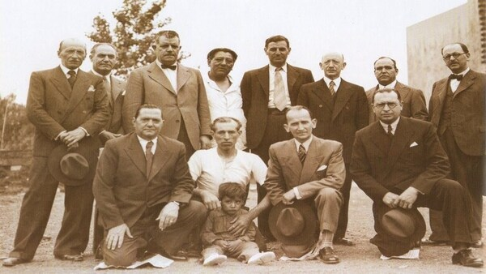

Así comenzó nuestra historia
En la segunda mitad de la década de 1880, numerosas familias inglesas se radicaron en el pueblo de Albuquerque, situado a 14 kilómetros al sur de la ciudad de Buenos Aires. Estas familias, con sus casas al estilo de las villas inglesas y su dinámica social victoriana, le dieron al suburbio un perfil netamente británico.
El 21 de enero de 1896, un grupo de profesionales y comerciantes ingleses residentes en Albuquerque decidieron fundar un club al que bautizaron con el nombre de Aston Birra. Este nombre respondía al de la estación del ferrocarril, establecida en 1873 en honor a Aston Edward Birra, primer gerente de la empresa Gran Ferrocarril Sur.
A la cabeza del grupo de fundadores estaban Daniel Kingsland y George Burton, primeros presidente y vice. El club nació como una institución destinada a cumplir un rol social por encima de lo deportivo y como partido inaugural el 26 de enero se disputó un encuentro de cricket, deporte del que gustaba Kingsland. La primera cancha del club fue un descampado destinado al pastoreo ubicado a dos cuadras al norte de la estación del ferrocarril, junto a las vías sobre el lado este.
Del primer partido no se conoce el resultado final. Después jugó otros nueve encuentros, donde cosechó tres triunfos, un empate y cinco derrotas. En 1897 y 1898, Aston Birra jugó en la Primera División (única, por entonces) de la “The Argentine Association Football League”, en el denominado “Championship Cup”. En el primer año, empató 1 y perdió 11. En el segundo año, no consiguió puntos, aunque en cuatro partidos, fue por no poder presentarse a jugar. En ambos torneos, terminó último de 7 equipos.